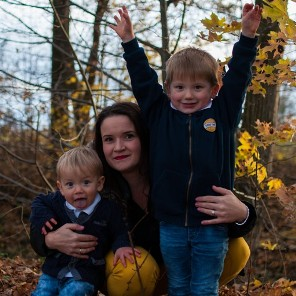

Slávka - Stanislava Vavřinová
Jsem mamka na mateřské dovolené se syny Marečkem 2 roky a Martínkem 4 roky. Před mateřskou jsem pracovala přibližně 10 let v bance. Na všech pozicích mě vždy provázely hypotéky, které jsem zpracovávala. Z různých témat Verča vybrala právě mnou nadhozenou Appku Hypošku.

Po inženýrském studiu Ekonomické fakulty Jihočeské Univerzity jsem pracovala chvilku jako recepční a hned po státnicích nastoupila za první bankovní přepážku. K tvorbě webu jsem se dostala naprostou náhodou. Ještě na vysoké jsem pro penzion mých rodičů tvořila webové stránky ve Frontpage. Stránky si spokojeně žily svým životem a jen čas od času někdo napsal, že je předělá, protože jsou zastaralé. Když přišel covid, nadešel čas pány vyslyšet. Priorita byla, abych byla schopná stránky ovládat samostatně. Už mě nebavilo se na mateřské vzdělávat pouze ve výchově dětí, proto mi tvorba webu přišla jako dobrý nápad. Kamarád doporučil WordPress, Czechitas a poslední jeho věta byla, že se tím můžu v budoucnu živit. Tehdy jsem se tomu zasmála. Pak ale přišel WordPress 1, 2 a 3 a mě začalo čím dál tím víc zajímat, jak ten WordPress obejít. Digitální akademie byla jasná volba. Moc mě to baví a práce v tomto oboru mě láká stále více.
Digitální akademie je veliký záhul. Spojit ji s malými dětmi, prací v penzionu rodičů a okrajově se spánkem je náročné. Akademie mě ale moc baví a věřím, že náš projekt bude skvělý.
Závěrem, to, co se píše vždy na konec, mezi mé záliby patří víno, když mi někdo nezavírá hospody, káva, když mi nezavírají kavárny, fitko, když mi ho někdo nezavírá. Naštěstí akademii nikdo nezavřel, tak aspoň něco teď můžeme dělat.